####################################
# Project name: Introduction to R and RStudio
# Data used: mtcars from R, Insurance from the MASS library and gss.2016 dataset
# Libraries used: MASS, tidyverse, dplyr (part of tidyverse)
####################################Introduction to R and RStudio
- The goal of this lesson is to introduce you to R and RStudio while teaching you how to perform data preparation using these tools. In this part, we will go over forming an understanding of statistics, learning about observations and variables, and being able to move around and get comfortable with R. I will also teach you how use and load data.
At a Glance
- In order to succeed in this lesson, you will need to start by having both R and RStudio downloaded. Then, the only way to learn R is to use it in various ways and to practice as much as you can.
- It is also important to note that this is a statistics class and that R is a statistical computing software. Because of that, we need to not only pay attention to what we are typing in, but understand why we are typing it in the ways suggested, and also how we could do it differently to get similar if not the same results.
Lesson Objectives
- Be Introduced to R and R Studio.
- Set up R and R Studio.
- Use basic Built-in Functions in R.
- Enter and load data into R.
Consider While Reading
- This material is so important because it is likely the start of your R journey and will provide the groundwork for learning a modern approach to calculating statistics. R has a fairly steep learning curve, but, once you are over it, it becomes fairly easy to figure out new things. It is important to make connections to what we are doing and why we are doing it a certain way. There are rules to learning R, and you will get better with constant practice. Try to avoid just typing in code. Instead, determine why the code was typed the way it was and try to figure out all the other ways the code could also be typed to get the same answer. Practice, practice, practice!
What is Statistics?
- Statistics is the methodology of extracting useful information from a data set.
- Numerical results are not very useful unless they are accompanied with clearly stated actionable business insights.
- To do good statistical analysis, you must do the following:
- Find the right data.
- Use the appropriate statistical tools.
- Clearly communicate the numerical information in written language.
- With knowledge of statistics:
- Avoid risk of making uninformed decisions and costly mistakes.
- Differentiate between sound statistical conclusions and questionable conclusions.
- Data and analytics capabilities have made a leap forward.
- Growing availability of vast amounts of data.
- Improved computational power.
- Development of sophisticated algorithms.
- The rise of Generative AI.
Two Main Branches of Statistics
- Descriptive Statistics - collecting, organizing, and presenting the data.
- Inferential Statistics - drawing conclusions about a population based on sample data from that population.
- A population consists of all items of interest.
- A sample is a subset of the population.
- A sample statistic is calculated from the sample data and is used to make inferences about the population parameter.
- Reasons for sampling from the population:
- Too expensive to gather information on the entire population.
- Often impossible to gather information on the entire population.
Setting up R
R Script Files
- Using R Script Files:
- A .R script is simply a text file containing a set of commands and comments. The script can be saved and used later to rerun the code. The script can also be documented with comments and edited again and again to suit your needs.
- Using the Console
- Entering and running code at the R command line is effective and simple. However, each time you want to execute a set of commands, you must re-enter them at the command line. Nothing saves for later.
- Complex commands are particularly difficult causing you to re-entering the code to fix any errors typographical or otherwise.R script files help to solve this issue.
Create a New R Script File
- To save your notes from today’s lecture, create a .R file named Chapter1.R and save it to your project file you made in the last class.
- There are a couple of parts to this chapter, and we can add code from today’s chapter in one file so that our code is stacked nicely together.
- For each new chapter, start a new file and save it to your project folder.
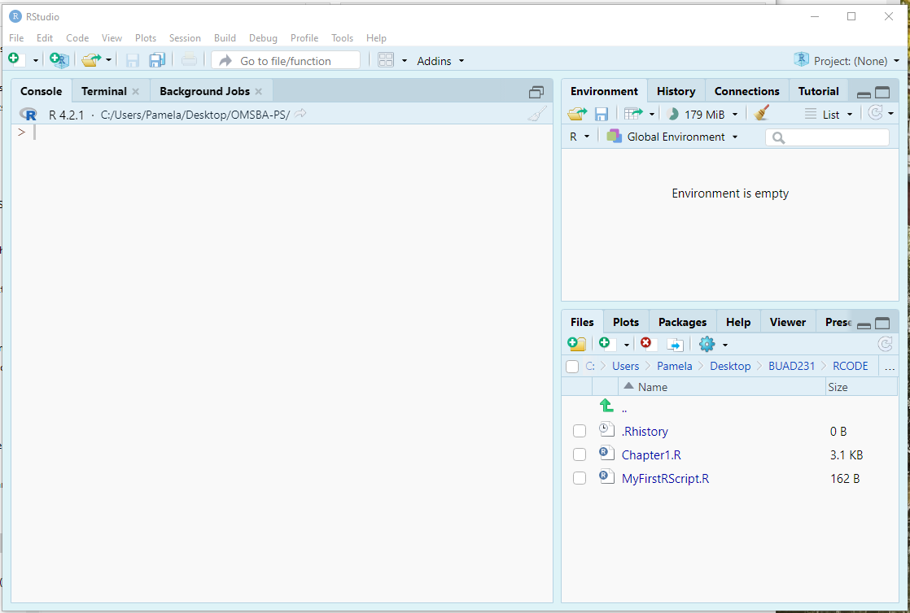
Project Files
- A RStudio project is a way to organize your work by creating a self-contained environment for your files, scripts, and outputs.
- The RStudio project file sits in the root directory, with the extension .Rproj.
- When your RStudio session is running through the project file (.Rproj), the current working directory points to the root folder where that .Rproj file is saved.
- Key Features
- Keeps all related files in one folder.
- Automatically sets the working directory to the project folder.
- Simplifies managing file paths (“data/myfile.csv” instead of a full path).
- Creating a project for our class. Projects are great because they aid in your organization technique.
- You will find that some professors are not insistent on making a project for their class, but it is helpful to still do to organize your materials. You will have a lot of code in this program!
- To create a project click \(File > New Project - New Directory > New Project\) and save your project to a place on your computer (not the cloud).
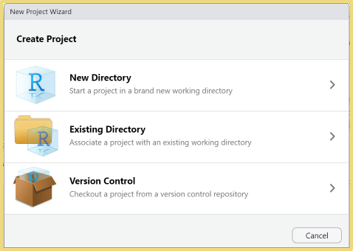
R Script files
- Entering and running code at the R command line is effective and simple. However, each time you want to execute a set of commands, you have to re-enter them at the command line. Nothing saves for later.
- Complex commands are particularly difficult causing you to re-entering the code to fix any errors typographical or otherwise. Fortunately, you can make a .R script file to solve this issue.
- A .R script is simply a text file containing a set of commands and comments. The script can be saved and used later to rerun the code. The script can also be documented with comments and edited again and again to suit your needs.
- Create your first R Script file within your Project for testing purposes.
- Go to File > New File > R Script
- Save this file as MyFirstRscript.R in your project folder you just made. You should see this new file under Files like mine is in the bottom right panel. As we create new files, continue to save them into your project folder.
- On the .R file presented to the left, comments are added as denoted by the hashtag which you can type or push ctrl + shift + c.
- If you type in your console, it will not save it for later. However, if you save code in this R Script file, you can open your file at a later date to rerun your code. Also, as we move through the class, feel free to document all your notes in your .R file via # called comments. More on comments later.
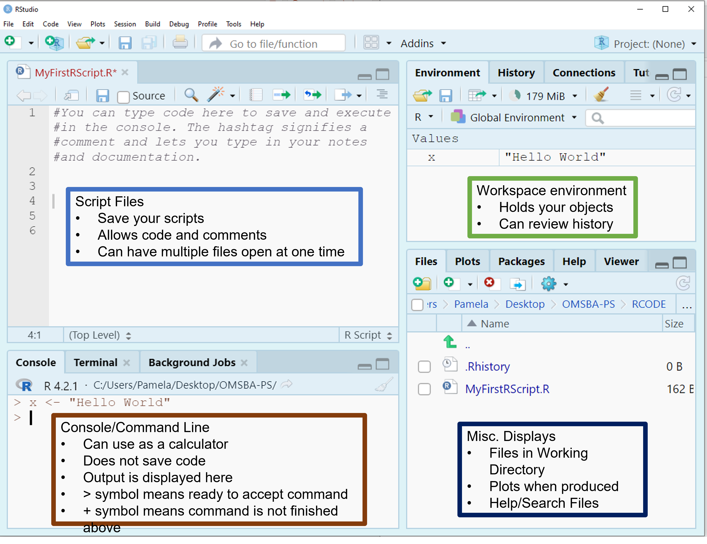
Using R More Effectively
Customizing RStudio
- Customizing RStudio through global options allows you to create a coding environment that aligns with your workflow and personal preferences. By tailoring settings such as appearance, pane layout, and editor behavior, you can improve productivity, enhance readability, and streamline your data analysis process. These adjustments not only make coding more efficient but also help you avoid common pitfalls, like workspace clutter or inconsistent settings. RStudio is highly flexible, so take the time to explore and experiment with its options to make the platform work best for you.
- What are Global Options
- Settings in RStudio that let you personalize the environment to suit your workflow.
- Why change global options?
- Improve productivity by tailoring RStudio to your preferences.
- Enhance readability and usability of code and outputs.
- Create a consistent environment across projects.
- Where to Find Global Options:
- Go to Tools > Global Options in the RStudio menu.
- Key Settings to Adjust
- Global Options > General: You can set your general information including your default working directory (when not in a project).Set your R Version if appropriate.
- Global Options > Code: Enable auto-complete, or soft-wrap for easier coding.
- Global Options > Appearance: You can customize the appearance to a theme that accommodates your learning style and visual preferences.
- Global Options > Spelling: You can turn on a spell check.
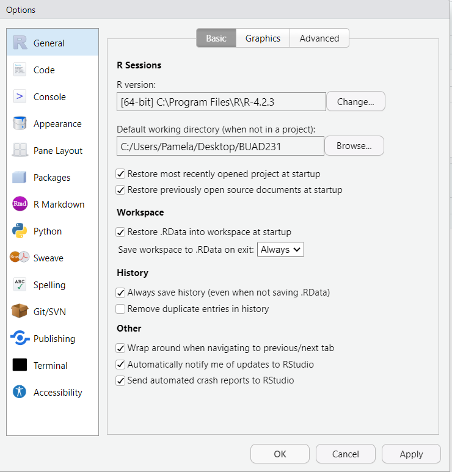 Global Options.R" class="img-fluid figure-img">
Quick Keys in R
- There are a lot of quick keys in R to make you able to use it faster and more effectively. You may look over these and try on your own.
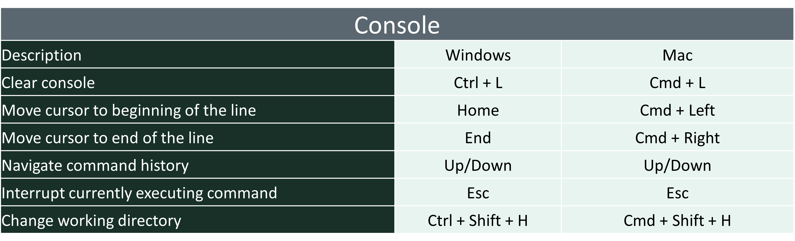
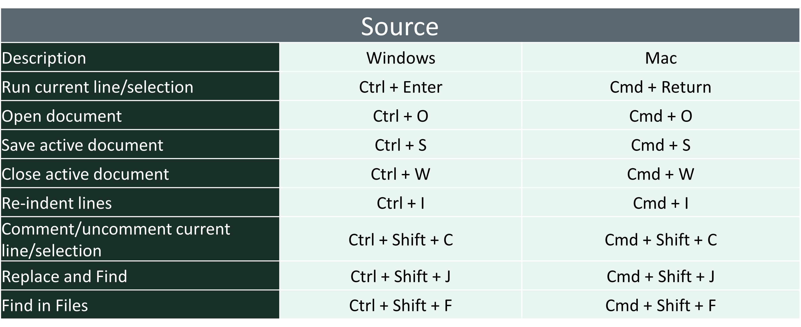
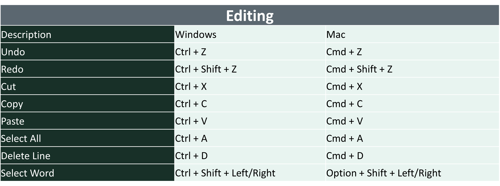
Getting Help in R
- There are lots of ways to get help in R.
- In R, use the help search box to find information on a function, parameter, or package.
- ?mean
- help.search(‘swirl’)
- help(package = ‘MASS’)
- ?install.packages
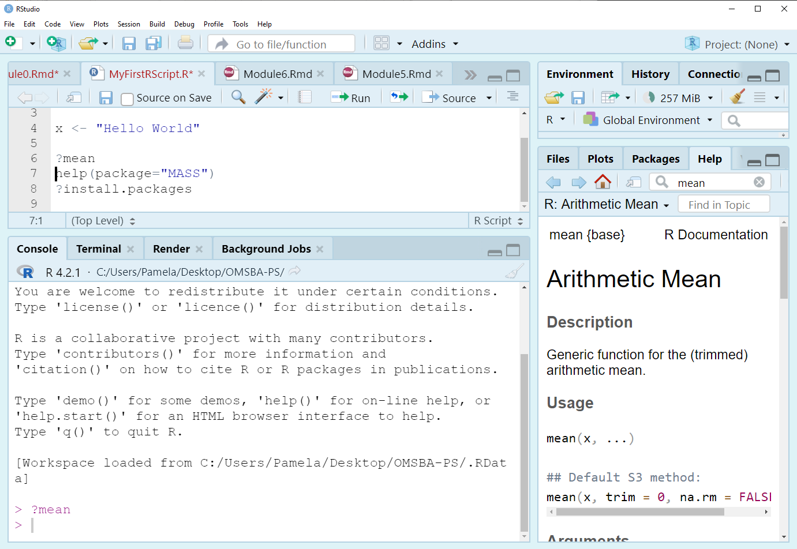
- You should try to look up the tapply command to see what it does.
- Use ?tapply in your .R file to pull up tapply() command or type tapply in the Help box. * Formally, you should see that the command applies a function to each cell of a ragged array, that is to each (non-empty) group of values given by a unique combination of the levels of certain factors. This means that the command does some math calculation (mean, sum, etc.) on a continuous variable after dividing the data by group.
- The format is tapply(x, index, and fun), where x is a continuous variable, index is a grouping variable or factor, and fun is a function like mean.
- More on that function later in the first lessons.
Accessing Data Files for the Course
- To download the data sets, go to our Blackboard page and download them to your computer.
- Once downloaded, unzip the file by right-clicking and selecting “Extract All”, and then move the subfolder named data to your working directory.
- In the example below, my project folder for the class is called BUAD502 and the subfolder that contains all the data files is called data. You can put your folder anywhere on the hard drive of your computer, but do not download it to places on the cloud like OneDrive.
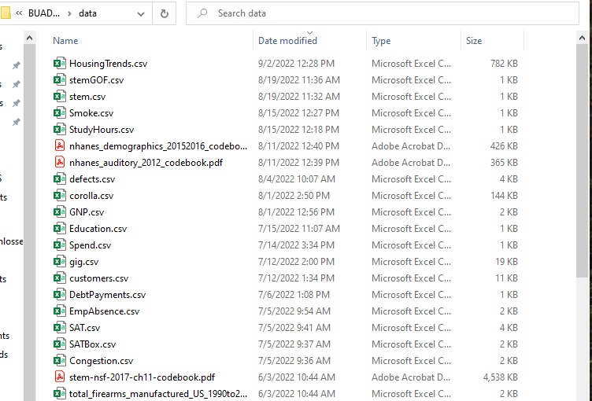
- We will use a number of data files plus more for homework/projects, so be prepared to use these files throughout the class.
Using R
Text in R
A Prolog
- A prolog is a set of comments at the top of a code file that provides information about what is in the file. It also names the files and resources used that facilitates identification. Including a prolog is considered coding best practice.
- On your own R Script File, add your own prolog following the template as shown.
- An informal prolog is below:
####################################
# Project name: Chapter 1
# Project purpose: To create an R script file to learn about R.
# Code author name: [Enter Your Name]
# Date last edited: [Enter Date Here]
# Data used: NA
# Libraries used: NA
####################################- Then, as we work through our .R script and add data files or libraries to our code, we go back and edit the prolog.
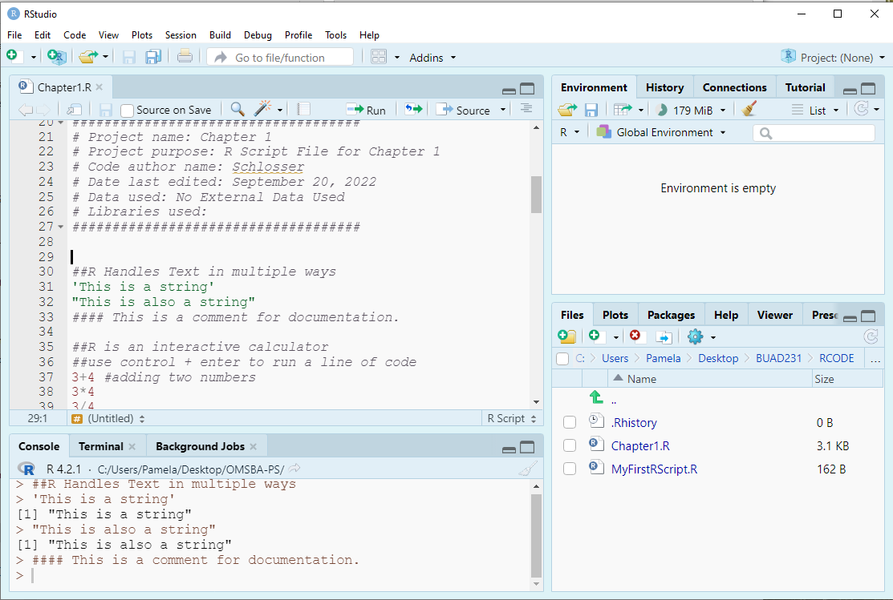
String
- In R, a string is a sequence of characters enclosed in quotes, used to represent text data.
- R accepts single quotes or double quotes when marking a string. However, if you use a single quote to start, use a single quote to end. The same for double quotes - ensure the pairing is the same quote type.
- You sometimes need to be careful with nested quotes, but generally it does not matter which you use.
"This is a string"[1] "This is a string""This is also a string"[1] "This is also a string"Note on R Markdown
- These files were formatted with RMarkdown. RMarkdown is a simple formatting syntax for authoring documents of a variety of types, including PowerPoint and html files.
- On the document, RMarkdown prints the command and then follows the command with the output after 2 hashtags.
- In your R Script File, you only need to type in the command and then run your code to get the same output as presented here.
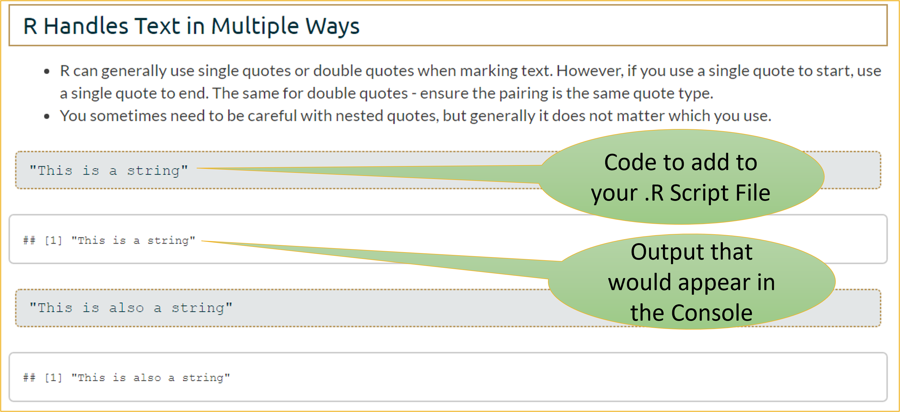
Running Commands
- There are a few ways to run commands via your .R file.
- You can click Ctr + Enter on each line (Cmd + Return on a Mac).
- You can select all the lines you want to run and select Ctr + Enter (Cmd + Return on a Mac).
- You can select all the lines you want to run and select the run button as shown in the Figure.
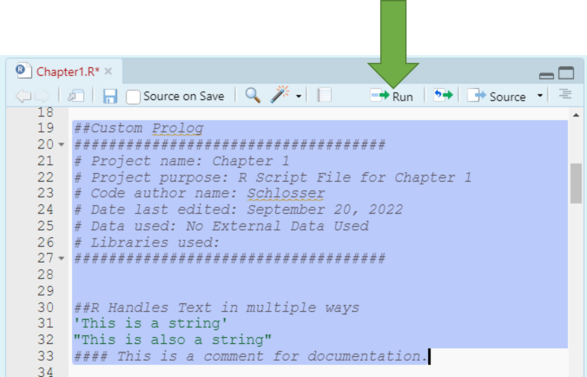
- Now that I have asked you to add a couple lines of code, after this point, when R code is shown on this file, you should add it to your .R script file along with any notes you want. I won’t explicitly say - “add this code.”
R is an Interactive Calculator
- An important facet of R is that it should serve as your sole calculator.
- Try these commands in your .R file by typing them in and clicking Ctr + Enter on each line.
3 + 4[1] 73 * 4[1] 123/4[1] 0.753 + 4 * 100^2[1] 40003- Take note that order of operations holds in R: PEMDAS
- Parentheses ()
- Exponents ^ and \(**\)
- Division \(/\), Multiplication \(*\), modulo, and integer division
- Addition + and Subtraction -
- Note that modulo and integer division have the same priority level as multiplication and division, where modulo is just the remainder.
2 + 3 * 5 - 7^2%%4 + (5/2)[1] 18.55/2 #parentheses: = 2.5[1] 2.52 + 3 * 5 - 7^2%%4 + 2.5[1] 18.57^2 #exponent:= 49[1] 492 + 3 * 5 - 49%%4 + 2.5[1] 18.53 * 5 #multiplication: = 15[1] 152 + 15 - 49%%4 + 2.5[1] 18.549%%4 #modulo: = 1 -- 49/4 is 48.25, so 1/4 or 1 is the remainder. [1] 1# The rest of the equation goes in order from left to right.
2 + 15 - 1 + 2.5[1] 18.52 + 15 #addition: = 17[1] 1717 - 1 #subtraction: = 16[1] 1616 + 2.5 #addition: = 18.5[1] 18.5## An example of integer division is below
49%/%4 #integer division: = 12 or 49/4 is 12.25, so the whole number is 12. [1] 12Observations and Variables
Going back to the basics in statistics, we need to define an observation and variable so that we can know how to use them effectively in R in creating objects.
An Observation is a single row of data in a data frame that usually represents one person or other entity.
A Variable is a measured characteristic of some entity (e.g., income, years of education, sex, height, blood pressure, smoking status, etc.).
In data frames in R, the columns are variables that contain information about the observations (rows).
- Note that we will break this code down later.
income <- c(34000, 123000, 215000) voted <- c("yes", "no", "no") vote <- data.frame(income, voted) voteincome voted 1 34000 yes 2 123000 no 3 215000 noObservations: People being measured.
Variables: Information about each person (income and voted).
# Shows the number of columns or variables
ncol(vote)[1] 2# Shows the number of rows or observations
nrow(vote)[1] 3# Shows both the number of rows (observations and columns
# (variables).
dim(vote)[1] 3 2Creating Objects
- Entering and Storing Variables in R requires you to make an assignment.
- We use the assignment operator ‘<-’ to assign a value or expression to a variable.
- We typically do not use the = sign in R even though it works because it also means other things in R.
- Some examples are below to add to your .R file.
states <- 29
A <- "Apple"
# Equivalent statement to above - again = is less used in R.
A = "Apple"
print(A)[1] "Apple"# Equivalent statement to above
A[1] "Apple"B <- 3 + 4 * 12
B[1] 51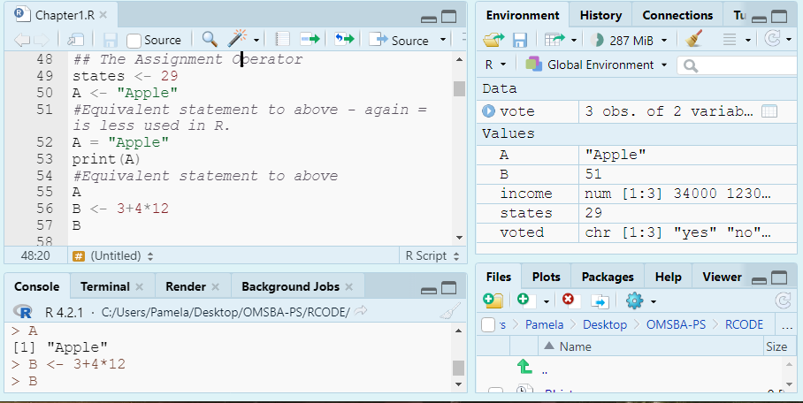
Naming Objects
- Line length limit: 80
- Always use a consistent way of annotating code.
- Camel case is capitalizing the first letter of each word in the object name, with the exception of the first word.
- Dot case puts a dot between words in a variable name while camel case capitalizes each word in the variable name.
- Object names appear on the left of assignment operator. We say an object receives or is assigned the value of the expression on the right.
- Naming Constants: A Constant contains a single numeric value.
- The recommended format for constants is starting with a “k” and then using camel case. (e.g., kStates).
- Naming Functions: Functions are objects that perform a series of R commands to do something in particular.
- The recommended format for Functions is to use Camel case with the first letter capitalized. (e.g., MultiplyByTwo).
- Naming Variables: A Variable is a measured characteristic of some entity.
The recommended format for variables is to use either the dot case or camel case. e.g., filled.script.month or filledScriptMonth.
A valid variable name consists of letters, numbers, along with the dot or underline characters.
A variable name must start with a letter, or the dot when not followed by a number.
A variable cannot contain spaces.
Variable names are case sensitive: x is different from X just as Age is different from AGE.
The value on the right must be a number, string, an expression, or another variable.
Some Examples Using Variable Rules:
AB.1 <- "Allowed?"
# Does not follow rules - not allowed Try the statement below with no
# hashtag to see the error message .123 <- 'Allowed?'
A.A123 <- "Allowed?"
G123AB <- "Allowed?"
# Recommended format for constants
kStates <- 29- Different R coders have different preferences, but consistency is key in making sure your code is easy to follow and for others to read. In this course, we will generally use the recommendation in the text which are listed above.
- We tend to use one letter variable names (i.e., x) for placeholders or for simple functions (like naming a vector).
Built-in Functions
- R has thousands of built-in functions including those for summary statistics. Below, we use a few built-in functions with constant numbers. The sqrt(), max(), and min() functions compute the square root of a number, and find the maximum and minimum numbers in a vector.
sqrt(100)[1] 10max(100, 200, 300)[1] 300min(100, 200, 300)[1] 100We can also create variables to use within built-in functions.
Below, we create a vector x and use a few built-in functions as examples.
- The sort() function sorts a vector from small to large.
x <- c(1, 2, 3, 3, 100, -10, 40) #Creating a Vector x sort(x) #Sorting the Vector x from Small to Large[1] -10 1 2 3 3 40 100max(x) #Finding Largest Element of Vector x[1] 100min(x) #Finding Smallest Element of Vector x[1] -10
Built-in Functions: Setting an Argument
- The standard format to a built-in function is functionName(argument)
- For example, the square root function structure is listed as sqrt(x), where x is a numeric or complex vector or array.
# Here, we are setting a required argument x to a value of 100. When
# a value is set, it turns it to a parameter of the function.
sqrt(x = 100)[1] 10# Because there is only one argument and it is required, we can
# eliminate its name x= from our function call. This is discussed
# below.
sqrt(100)[1] 10- There is a little variety in how we can write functions to get the same results.
- A parameter is what a function can take as input. It is a placeholder and hence does not have a concrete value. An argument is a value passed during function invocation.
- There are some default values set up in R in which arguments have already been set.
- There are a few functions with no parameters like Sys.time() which produces the date and time. If you are not sure how many parameters a function has, you should look it up in the help.
Default Values
- There are many default values set up in R in which arguments have already been set to a particular value or field.
- Default values have been set when you see the = value in the instructions. If we don’t want to change it, we don’t need to include it in our function call.
- When only one argument is required, the argument is usually not set to have a default value.
Built-in Functions: Using More than One Argument
- For functions with more than one parameter, we must determine what arguments we want to include, and whether a default value was set and if we want to change it. Default values have been set when you see the = value in the instructions. If we don’t want to change it, we don’t need to include it in our function call.
- For example, the default S3 method for the seq() function is listed as the following: seq(from = 1, to = 1, by = ((to - from)/(length.out - 1)),length.out = NULL, along.with = NULL, …)
- Default values have been set on each parameter, but we can change some of them to get a meaningful result.
- For example, we set the from, to, and by parameter to get a sequence from 0 to 30 in increments of 5.
# We can use the following code.
seq(from = 0, to = 30, by = 5)[1] 0 5 10 15 20 25 30We can simplify this function call even further:
- If we use the same order of parameters as the instructions, we can eliminate the argument= from the function.
- Since we do list the values to the arguments in same order as the function is defined, we can eliminate the from=, to=, and by= to simplify the statement.
# Equivalent statement as above seq(0, 30, 5)[1] 0 5 10 15 20 25 30If you leave off the by parameter, it defaults at 1.
# Leaving by= to default value of 1
seq(0, 30) [1] 0 1 2 3 4 5 6 7 8 9 10 11 12 13 14 15 16 17 18 19 20 21 22 23 24
[26] 25 26 27 28 29 30- There can be a little hurdle deciding when you need the argument value in the function call. The general rule is that if you don’t know, include it. If it makes more sense to you to include it, include it.
Tips on Arguments
- Always look up a built-in function to see the arguments you can use.
- Arguments are always named when you define a function.
- When you call a function, you do not have to specify the name of the argument.
- Arguments have default values, which is used if you do not specify a value for that argument yourself.
- An argument list comprises of comma-separated values that contain the various formal arguments.
- Default arguments are specified as follows: parameter = expression
y <- 10:20
sort(y) [1] 10 11 12 13 14 15 16 17 18 19 20sort(y, decreasing = FALSE) [1] 10 11 12 13 14 15 16 17 18 19 20Install Packages
- In R, a package is a collection of functions, data, and documentation bundled together to perform specific tasks. Packages extend the capabilities of base R by providing tools for specialized analyses, graphics, data manipulation, machine learning, and much more.
- Option 1: Run install.packages(“tidyverse”) in the Console
- Option 2: Go to: Tools → Install Packages
- Type the package name in the dialog box.
- Make sure Repository (CRAN) is selected.
- Click Install.
- Once installed, you can load the package with: library(tidyverse).
- You only need to install once, but you should load with library() every time you use it in a new session.
Accessing Functions from Libraries
To use functions from a package like dplyr, you can either:
- Load the library
data(mtcars) library(dplyr) functionexample <- filter(mtcars, mpg > 20)- Use the function explicitly, where explicit use of libraries means calling a function by prefixing it with the package name and ::
functionexample <- dplyr::filter(mtcars, mpg > 20)- In other words, we use :: when you only need one function or want to avoid loading the full package.
Note on Libraries
- Some libraries are part of other global libraries:
- dplyr and ggplot2 are part of tidyverse, there is actually no need to activate dplyr or ggplot2 if tidyverse is active, however, sometimes it helps when conflicts are present.
- An example of a conflict is the use of a select function which shows up in both the dplyr and MASS package. If both libraries are active, R does not know which to use.
- tidyverse has many libraries included in it. You can see an list in the console message after you load the library.
Saving
- You can save your work in the file menu or the save shortcut using Ctrl + S or Cmd+S depending on your Operating System.
- You will routinely be asked to save your workspace image, and you don’t need to save this unless specifically asked. It saves the output we have generated so far.
- You can stop this from happening by setting the Tools > Global Options > Under Workspace changing this to Never.
- Be careful with this option because it won’t save what you don’t run.
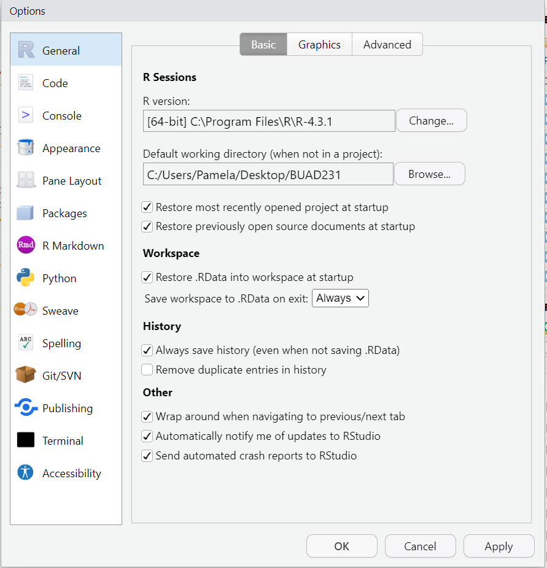
The Environment
- You can evaluate your Environment Tab to see your Variables we have defined in R Studio.
- Use the following functions to view and remove defined variables in your Global Environment
ls() #Lists all variables in Global Environment [1] "A" "A.A123" "AB.1" "B"
[5] "functionexample" "G123AB" "income" "kStates"
[9] "mtcars" "states" "vote" "voted"
[13] "x" "y" rm(states) #Removes variable named states
rm(list = ls()) #Clears all variables from Global Environment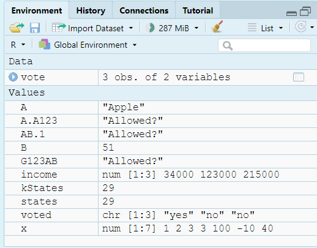
Entering and Loading Data
Creating a Vector
- A vector is the simplest type of data structure in R.
- A vector is a set of data elements that are saved together as the same type.
- We have many ways to create vectors with some examples below.
- Use c() function, which is a generic function which combines its arguments into a vector or list.
c(1, 2, 3, 4, 5) #Print a Vector 1:5[1] 1 2 3 4 5- If numbers are aligned, can use the “:“ symbol to include numbers and all in between. This is considered an array.
1:5 #Print a Vector 1:5[1] 1 2 3 4 5- Use seq() function to make a vector given a sequence.
seq(from = 0, to = 30, by = 5) #Creates a sequence vector from 0 to 30 in increments on 5 [1] 0 5 10 15 20 25 30- Use rep() function to repeat the elements of a vector.
rep(x = 1:3, times = 4) #Repeat the elements of the vector 4 times [1] 1 2 3 1 2 3 1 2 3 1 2 3rep(x = 1:3, each = 3) #Repeat the elements of a vector 3 times each[1] 1 1 1 2 2 2 3 3 3Creating a Matrix
A matrix is another type of object like a vector or a list.
- A matrix has a rectangular format with rows and columns.
- A matrix uses matrix() function
- You can include the byrow = argument to tell the function whether to fill across or down first.
- You can also include the dimnames() function in addition to the matrix() to assign names to rows and columns.
Using matrix() function, we can create a matrix with 3 rows and 3 columns as shown below.
- Take note how the matrix fills in the new data.
# Creating a Variable X that has 9 Values. x <- 1:9 # Setting the matrix. matrix(x, nrow = 3, ncol = 3)[,1] [,2] [,3] [1,] 1 4 7 [2,] 2 5 8 [3,] 3 6 9# Note – we do not need to name the arguments because we go in the # correct order. The function below simplifies the statement and # provides the same answer as above. matrix(x, 3, 3)[,1] [,2] [,3] [1,] 1 4 7 [2,] 2 5 8 [3,] 3 6 9
Setting More Arguments in a Matrix
- The byrow argument fills the Matrix across the row
- Below, we can use the byrow statement and assign it to a variable m.
m <- matrix(1:9, 3, 3, byrow = TRUE) #Fills the Matrix Across the Row and assigns it to variable m
m #Printing the matrix in the console [,1] [,2] [,3]
[1,] 1 2 3
[2,] 4 5 6
[3,] 7 8 9- The dimnames() function adds labels to either the row and the column. In this case below both are added to our matrix m.
dimnames(x = m) <- list(c("2020", "2021", "2022"), c("low", "medium", "high"))
m #Printing the matrix in the console low medium high
2020 1 2 3
2021 4 5 6
2022 7 8 9- You try to make a matrix of 25 items, or a 5 by 5, and fill the matrix across the row and assign the matrix to the name m2.
- You should get the answer below.
[,1] [,2] [,3] [,4] [,5]
[1,] 1 2 3 4 5
[2,] 6 7 8 9 10
[3,] 11 12 13 14 15
[4,] 16 17 18 19 20
[5,] 21 22 23 24 25Cbind and Rbind
The rbind() and cbind() functions in R are used to combine vectors, matrices, or data frames by rows (rbind) or columns (cbind), respectively, to form a larger matrix or data frame.
- cbind() joins vectors side by side (as columns).
- rbind() joins vectors on top of each other (as rows).
- Both functions require vectors of equal length.
# Vectors to use a <- c(1, 2, 3) b <- c(4, 5, 6) # Combine as columns (column-bind) matrix_cbind <- cbind(a, b) matrix_cbinda b [1,] 1 4 [2,] 2 5 [3,] 3 6# Combine as rows (row-bind) matrix_rbind <- rbind(a, b) matrix_rbind[,1] [,2] [,3] a 1 2 3 b 4 5 6
Differences between Data Frames and Matrices
- In a data frame the columns contain different types of data, but in a matrix all the elements are the same type of data. A matrix is usually numbers.
- A matrix can be looked at as a vector with additional methods or dimensions, while a data frame is a list.
Creating a Data Frame
- A data frame is a table or a two-dimensional array-like structure in which each column contains values of one variable and each row contains one set of values from each column. In a data frame the rows are observations and columns are variables.
- Data frames are generic data objects to store tabular data.
- The column names should be non-empty.
- The row names should be unique.
- The data stored in a data frame can be of numeric, factor or character type.
- Each column should contain same number of data items.
- Combing vectors into a data frame using the data.frame() function
- Below, we can create vectors for state, year enacted, personal oz limit medical marijuana.
state <- c("Alaska", "Arizona", "Arkansas")
year.legal <- c(1998, 2010, 2016)
ounce.lim <- c(1, 2.5, 3)- Then, we can combine the 3 vectors into a data frame and name the data frame pot.legal.
pot.legal <- data.frame(state, year.legal, ounce.lim)- Next, check your global environment to confirm data frame was created.
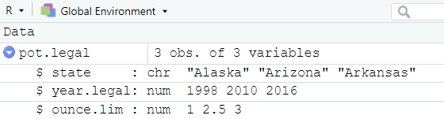
Importing a Data Frame into R
- When importing data from outside sources, you can do the following:
- You can import data from an R package using data() function.
- You can also link directly to a file on the web.
- You can import data through from your computer through common file extensions:
- .csv: comma separated values;
- .txt: text file;
- .xls or .xlsx: Excel file;
- .sav: SPSS file;
- .sasb7dat: SAS file;
- .xpt: SAS transfer file;
- .dta: Stata file.
- Each different file type requires a unique function to read in the file. With all the variety in file types, it is best to look it up in the R Community to help.
Use data() function
- All we need is the data() function to read in a data set that is part of R. R has many built in libraries now, so there are many data sets we can use for testing and learning statistics in R.
# The mtcars data set is part of R, so no new package needs to be
# downloaded.
data("mtcars")Load a data frame from a unique package in R.
- There are also a lot of packages that house data sets. It is fairly easy to make a package that contains data and load it into CRAN. These packages need to be installed into your R one time. Then, each time you open R, you need to reload the library using the library() function.
- When your run the install.packages() function, do not include the # symbol. Then, after you run it one time, comment it out. There is no need to run this code a second time unless something happens to your RStudio.
# install.packages('MASS') #only need to install package one time in # R library(MASS)
data("Insurance")
head(Insurance) District Group Age Holders Claims
1 1 <1l <25 197 38
2 1 <1l 25-29 264 35
3 1 <1l 30-35 246 20
4 1 <1l >35 1680 156
5 1 1-1.5l <25 284 63
6 1 1-1.5l 25-29 536 84Accessing Variables
- You can directly access a variable from a dataset using the $ symbol followed by the variable name.
- The $ symbol facilitates data manipulation operations by allowing easy access to variables for calculations, transformations, or other analyses. For example:
head(Insurance$Claims) #lists the first 6 Claims in the Insurance dataset.[1] 38 35 20 156 63 84sd(Insurance$Claims) #provides the standard deviation of all Claims in the Insurance dataset.[1] 71.1624Working Directories
In R, when working with data files stored on your computer, it’s important to understand the difference between absolute and relative file paths. An absolute reference gives the complete path to the file, starting from the root directory. This path is specific to your system, and it doesn’t change regardless of where the R script is located. For example, on a Windows machine, you might use something like
read.csv("C:/Users/username/Documents/data.csv"). This path will always point to the same file, but it can make your code less portable since it only works on your machine or if others have the exact same file structure.On the other hand, a relative reference specifies the file’s path relative to the location of your R script or working directory. It is more flexible because it assumes the file is located in a directory relative to the current project or script. For example, if your script and data file are in the same folder, you could use
read.csv("data.csv"). If the file is in a subdirectory, you would reference it relatively likeread.csv("data/data.csv"). Relative paths make your code more portable and easier to share since it will work as long as the folder structure remains consistent.Using relative paths is often a best practice, especially in collaborative projects or when sharing code. You can check your current working directory in R with
getwd()and set it withsetwd().
Absolute File Paths
- Absolute vs. Relative Links
- An absolute file path provides the complete location of a file, starting from the root directory of your computer.
- Always points to the same file.
- Independent of the script’s location.
- Example:
read.csv("C:/Users/username/Documents/data.csv")
- Pro
- Reliable for your system
- No Ambiguity in locating files
- Cons
- Not portable; requires the same file structure across systems.
- Harder to share code with collaborators.
Relative File Paths
- A relative file path specifies the file location based on the working directory of your R project or script.
- Changes based on the working directory.
- Often starts from the project folder.
- Example:
read.csv("data/myfile.csv")
- Pros
- More portable; works across systems if the project structure is consistent.
- Easier collaboration when sharing code and project files.
- Cons
- Requires setting the working directory correctly (getwd() and setwd() can help).
Setting up a Working Directory
You should have the data files from our LMS in a data folder on your computer. Your project folder would contain that data folder.
Before importing and manipulating data, you must find and edit your working directory to directly connect to your project folder!
These functions are good to put at the top of your R files if you have many projects going at the same time.
getwd() #Alerts you to what folder you are currently set to as your working directory
# For example, my working directory is set to the following:
# setwd('C:/Users/Desktop/ProbStat') #Allows you to reset the working
# directory to something of your choice.- In R, when using the setwd() function, notice the forward slashes instead of backslashes.
- You can also go to Tools > Global Options > General and reset your default working directory when not in a project. This will pre-select your working directory when you start R.
- Or if in a project, like we should be, you can click the More tab as shown in the Figure below, and set your project folder as your working directory.
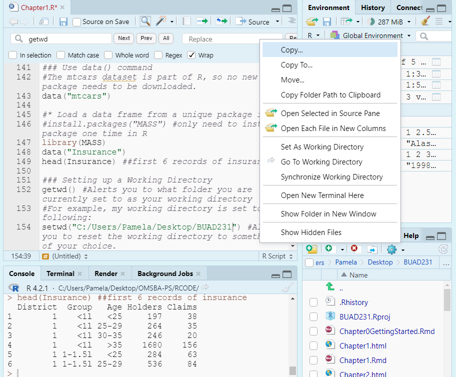
##Reading in Data from .csv
- Reading in a .csv file is extremely popular way to read in data.
- There are a few functions to read in .csv files. And these functions would change based on the file type you are importing.
read.csv() function
Extremely popular way to read in data.
read.csv() is a base R function that comes built-in with R: No library necessary
All your datasets should be in a data folder in your working directory so that you and I have the same working directory. This creates a relative path to our working directory.
The structure of the function is datasetName <- read.csv(“data/dataset.csv”).
gss.2016 <- read.csv(file = "data/gss2016.csv")
# or equivalently
gss.2016 <- read.csv("data/gss2016.csv")
# Examine the contents of the file
summary(object = gss.2016) grass age
Length:2867 Length:2867
Class :character Class :character
Mode :character Mode :character # Or equivalently, we can shorten this to the following code
summary(gss.2016) grass age
Length:2867 Length:2867
Class :character Class :character
Mode :character Mode :character read_csv function
- read_csv() is a function from the readr package, which is part of the tidyverse ecosystem.
- read_csv() is generally faster than read.csv() as it’s optimized for speed, making it more efficient, particularly for large datasets.
- In R, both
read.csv()andread_csv()are used to read CSV files, but they come from different packages and have important differences.read.csv()is part of base R and is widely used for loading CSV files into data frames, as indata <- read.csv("data/data.csv"). It can be slower with large datasets and automatically converts strings to factors unlessstringsAsFactors = FALSE. read_csv(), from the readr package in the tidyverse, is faster and better suited for large datasets. You’d use it likedata <- readr::read_csv("data/data.csv"). It doesn’t convert strings to factors by default and provides clearer error messages.read_csv()is often preferred for performance and better handling of data types, especially in larger datasets or tidyverse projects.
# install.packages(tidyverse) ## Only need to install one time on
# your computer. #install.packages links have been commented out
# during processing of RMarkdown. Activate the library, which you
# need to access each time you open R and RStudio
library(tidyverse)# Now open the data file to evaluate with tidyverse
gss.2016b <- read_csv(file = "data/gss2016.csv")Using AI
Use the following prompts on a generative AI, like chatGPT, to learn more about introductory topics.
Explain the difference between descriptive and inferential statistics and provide real-life examples of both.
What is the purpose of using R in statistical analysis, and what are the key benefits of using RStudio as a graphical interface?
What happens when you assign the same variable multiple values in R? Write an example script that demonstrates this behavior and explains the output.
Create a script that demonstrates how to assign values to variables using both numeric and character data types. Then, explain how these assignments are stored in RStudio’s environment.
In R, what is the role of the assignment operator <- Demonstrate its use by creating a few variables for numeric and character data types.
Demonstrate how to create a vector in R using the c() function. Use this vector to perform basic operations like addition and multiplication.
Write a script that reads a CSV file into R using read.csv(). Summarize the dataset and explain how the columns and rows are structured.
How can you access specific columns of a data frame using the $ operator? Provide an example using a sample dataset in R.
Explain how to use the summary() function in R to summarize a dataset. Write a script that loads a dataset and runs summary() on it.
Summary
- In this lesson, we went over information to make sure you had some basics to really start learning R. There are a lot of ways to get the same things done in R; you have to find the way that works best for you. As we learn R, you will get used to doing things your way to be able to slice and evaluate the data to find rich information from the data sets we look at. As long as the data was handled properly, it does not matter how we reach our goal using R as long as we do it ourselves.
Comments